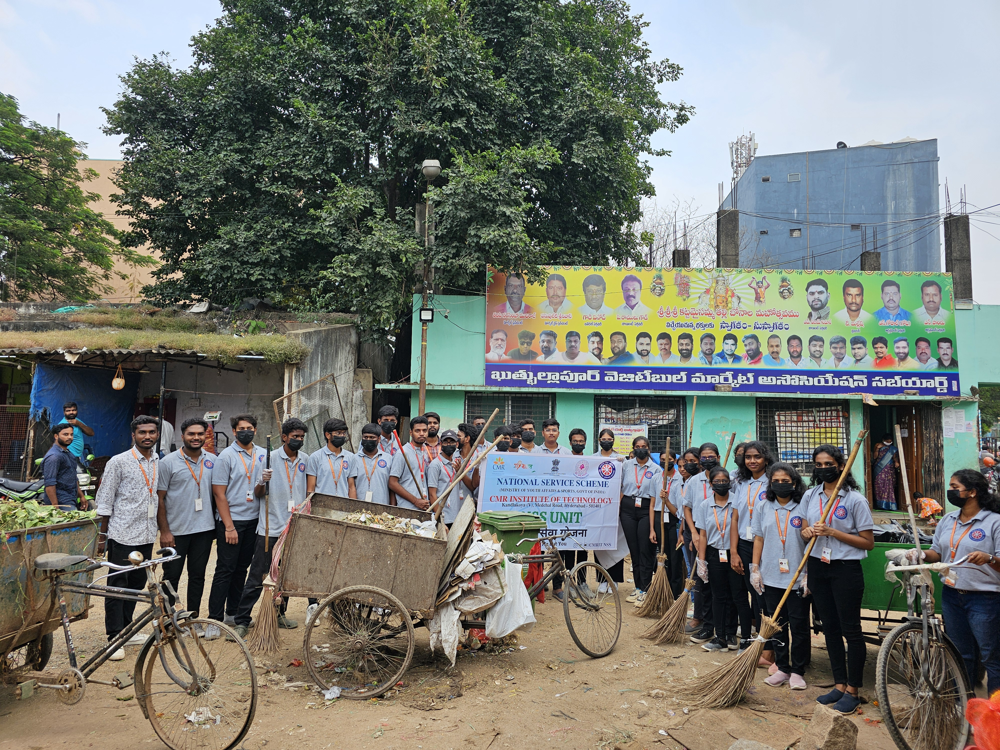
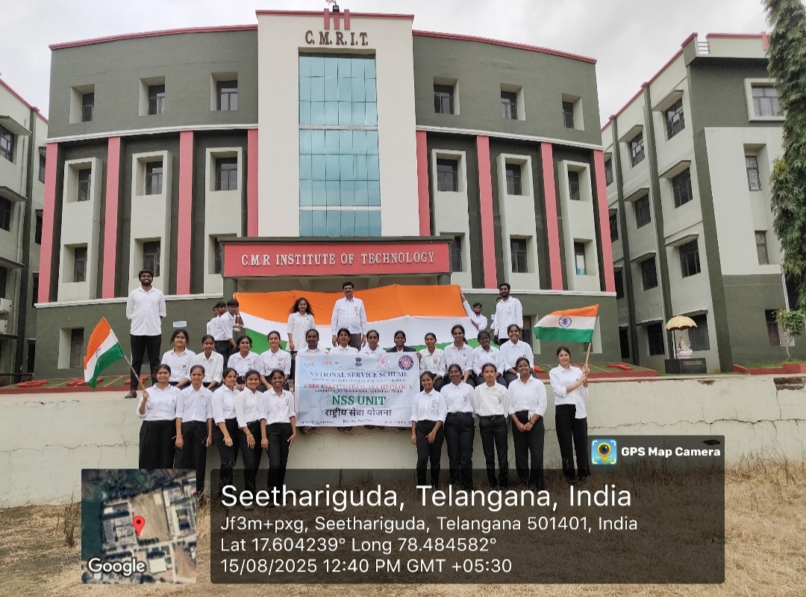
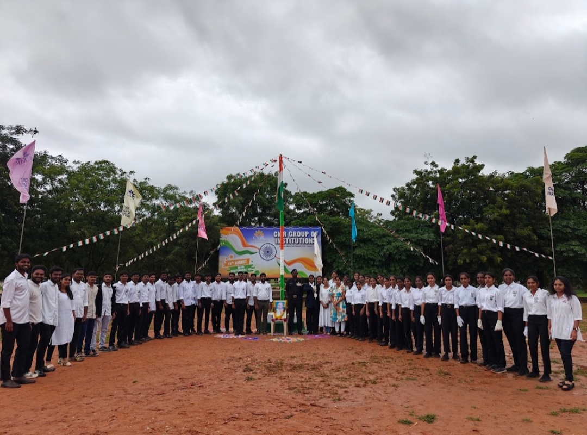
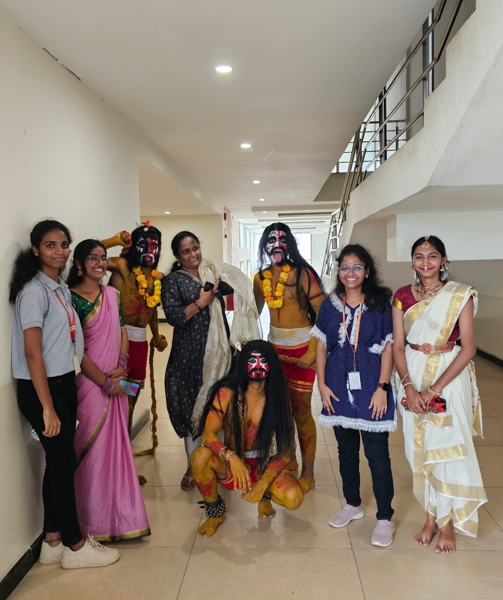
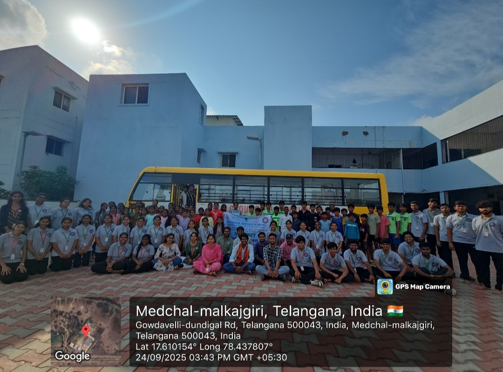
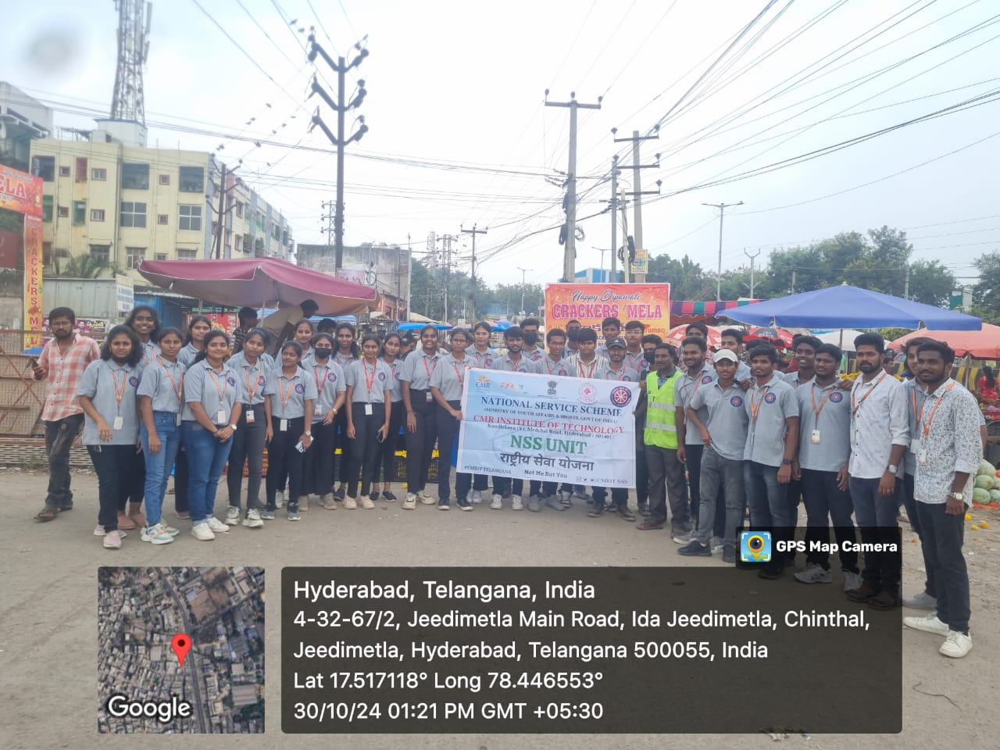

1 of 6
Building Intelligent Applications
Final-year B.Tech student in Computer Science Engineering specializing in Artificial Intelligence and Machine Learning, with strong skills in Java, Python, machine learning, data structures, and software development. Experienced in building intelligent applications, machine learning solutions, and technology-driven products.
Final-year B.Tech student in Computer Science Engineering specializing in Artificial Intelligence and Machine Learning at CMR Institute of Technology, Hyderabad. Proficient in Java, Python, machine learning, data structures, and software development with demonstrated algorithmic problem-solving and applied project experience building intelligent applications.
Academic foundations and rigorous curriculum in Computer Science, Artificial Intelligence, and Analytical Disciplines.
CMR Institute of Technology – Hyderabad
Specializing in Artificial Intelligence and Machine Learning. Rigorous coursework across Data Structures, Algorithms, Object-Oriented Programming, Database Management Systems, and Cloud Architectures.
Sri Chaitanya Junior College
Mathematics, Physics, and Chemistry (MPC). Developed analytical reasoning, mathematical modeling, and problem-solving foundations.
St. Pius X High School
Graduated with a perfect 10/10 CGPA across all subjects, establishing foundational discipline, dedication, and academic excellence.
Comprehensive toolkit categorized across programming, machine learning, web engineering, databases, and foundational computer science.
Developed a coding assessment platform that evaluates programming performance through automated analysis, scoring workflows, and developer insights.
Created a machine learning text classification system to identify spam messages using NLP preprocessing and classification algorithms.
Built a food redistribution coordination platform connecting donors and receivers to reduce food waste through structured workflows and database management.
India's Largest National AI Builder Hackathon • Team Agent Stack
Scored 238 points in Module 1, advanced to Module 2 at BITS Pilani Hyderabad among 3,800+ participants, progressed to Module 3, and secured Overall 2nd Place. Built and demonstrated a complete end-to-end AI-driven prototype in an intensive 36-hour offline sprint.
Participated in the intense 24-hour CMRIT Glitch hackathon sprint, building fast, robust, and scalable full-stack software solutions under tight constraints.
Participated in GDG TechSprint Hackathon 2026, leveraging Google Cloud developer technologies and rapid prototyping methodologies.
View PDFParticipated in Vynedam Talent Hunt 2K26, a 36-hour national hackathon testing algorithmic problem solving, computational complexity, and data structures.
View PDFCollaborative engineering challenge focusing on rapid prototyping, real-world problem solving, and architecture design.
View PDFNetworking & Packet Tracer Labs
Accredited credentials across CCNA core networking, routing & switching protocols, enterprise automation, and Packet Tracer network simulation.
Cloud Engineering & Generative AI
Official Google Cloud accreditations validating associate cloud engineering capabilities and generative AI leadership.
Java, Cloud Computing & Generative AI
Specialized accreditations covering Java Foundations, Cloud Infrastructure, Generative AI techniques, and Database Management Systems.
Oracle Certified Foundations Associate
Oracle Cloud Infrastructure 2025 Certified AI Foundations Associate
Recognized by Oracle Corporation validating core AI, ML concepts, and OCI intelligent architecture.
TATA (Forage) Job Simulation
GenAI Powered Data Analytics Job Simulation
Completed practical tasks in exploratory data analysis, AI delinquency modeling, and executive collections storytelling.
Cloud Computing Masterclass
Fundamentals of Cloud Computing
Masterclass covering distributed systems, scalable cloud native architecture, virtualization, and high availability.
Beyond academics, I actively participate in NSS and community activities, contributing through teamwork, volunteering, awareness initiatives, and social service.
Contributing through community service, student engagement, cleanliness initiatives, and social responsibility.





